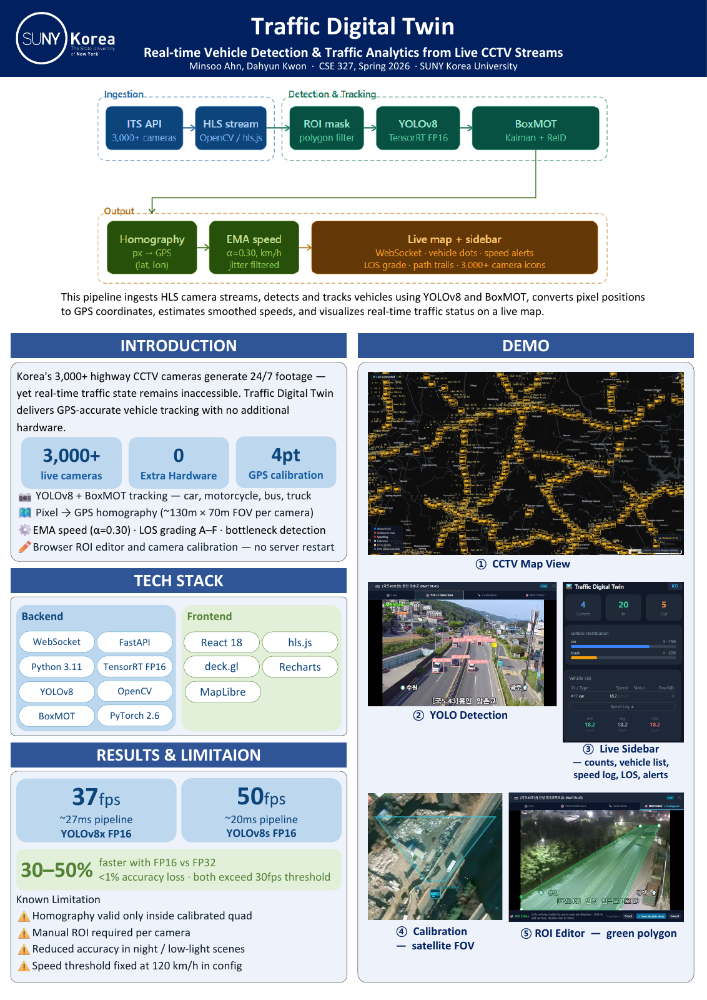

영상에서 교통 상황을 꺼내 보고 싶었어요Starting with a map, not just detection boxes
CCTV에 차량 탐지 모델을 붙이고 그 결과를 지도에 연결하면 어떨까 하는 아이디어를 제안했어요. 영상 위에 상자를 그리는 데서 끝내지 않고, 차량이 어디로 움직이는지와 교통 상황을 함께 볼 수 있는 화면을 만들고 싶었어요. Spring 2026 CSE 327 Computer Vision 수업에서 두 사람이 함께 시작한 프로젝트예요.
둘 다 컴퓨터 비전은 처음이었어요. 필요한 원리를 먼저 공부해 공유하고, 제가 알고리즘을 설계하고 구현하는 일과 데이터 준비, 영상 처리와 백엔드 연결을 맡았어요. 팀원과 중간 결과를 함께 보며 고쳤고 학과 Showcase에서는 포스터로 발표했어요. 혼자 만든 프로젝트는 아니에요.
아래 구현 설명에는 저장소의 후속 버전도 포함돼요. 초기 Showcase 포스터는 YOLOv8을 사용했고, 현재 보고서의 성능 비교는 YOLO26m을 사용해요. 학기 중 발표 자료와 이후 바뀐 구현과 측정 조건을 구분해서 소개해요.
I proposed connecting CCTV vehicle detection to a map. The aim was to go beyond drawing boxes on video and show where vehicles were moving alongside the broader traffic situation. The project began as a two-person team assignment in CSE 327 Computer Vision in Spring 2026.
Computer vision was new to both of us. I studied the relevant concepts and shared them, then worked on algorithm design and implementation, data preparation, video processing, and backend integration. We reviewed intermediate results together and presented a poster at the department Showcase. This was a shared project, not a solo build.
The implementation described below also includes later repository work. The original Showcase poster used YOLOv8, while the current report's backend benchmark uses YOLO26m. I keep the earlier presentation, later implementation, and their measurement conditions separate.
한 프레임이 지도에 도착하기까지The path from a frame to the interface
현재 저장소에서는 사용자가 CCTV를 선택하면 HLS 영상을 가져오고, YOLO와 BoxMOT으로 차량을 탐지하고 추적해요. 한 프레임의 상자 목록뿐 아니라 같은 차량이 다음 프레임에서 어디로 갔는지 이어 붙이는 단계가 있어야 위치 변화와 속도를 계산할 수 있어요.
차량을 탐지하고 추적한 다음에는 영상 좌표를 지도 좌표로 바꾸고, 차량별 이동과 속도를 정리해요. FastAPI 백엔드는 처리 결과와 주석이 달린 영상을 반환하고 분석 결과를 WebSocket으로 전달해요. React와 deck.gl 화면에서는 차량, 이동 흔적, 카메라가 보는 영역과 혼잡 정보를 겹쳐 보여줘요.
이 중 제가 맡았다고 설명할 수 있는 범위는 알고리즘과 데이터 정리, OpenCV 처리, FastAPI 연결이에요. 뒤에서 소개하는 후속 저장소의 모든 보정 방식이나 화면 기능을 제가 단독으로 작성했다고 주장하지는 않아요. 프로젝트가 어떻게 동작하는지와 제 기여를 구분해서 적었어요.
In the current repository, selecting a CCTV camera loads its HLS stream, then YOLO and BoxMOT detect and track vehicles. A list of boxes for one frame is not enough for motion: the system needs to connect a vehicle to its position in later frames before estimating displacement or speed.
Detection and tracking are followed by image-to-map projection and per-vehicle motion analysis. The FastAPI backend returns processing results and annotated frames and broadcasts analytics through WebSockets. The React/deck.gl interface layers vehicle markers, trails, camera footprints, and congestion information onto the map.
My supported contribution is the algorithms and data preparation, OpenCV processing, and FastAPI integration. I do not attribute every later calibration method or interface feature in the repository to myself. The system description and my individual contribution are kept distinct.
픽셀을 미터와 위도로 바꾸는 문제Why a detected position is not yet a map position
차량을 찾았다고 위치나 속도를 바로 알 수 있는 것은 아니었어요. 카메라의 각도와 높이, 바라보는 방향을 알지 못하면 같은 픽셀 이동도 실제 거리가 달라져요. 카메라마다 조건이 달라 한 영상에서 맞춘 방법이 다른 영상에서는 잘 맞지 않았고, 각도와 위치, 움직임 같은 변수를 하나씩 확인했어요.
저장소에는 영상의 네 점과 지도상의 네 점을 대응시켜 homography를 만드는 수동 보정 경로가 있어요. 현재 구현은 자동 보정과 도로 정보도 함께 사용해요. NodeLink 도로 중심선을 따라 카메라를 맞추고, 평면 투영만으로 커브를 가로지르지 않도록 도로 모양을 따라 좌표를 옮기는 방식이 보고서와 코드에 남아 있어요.
자동 보정이 항상 맞는 것은 아니에요. 가까운 평행 도로를 잘못 고르거나 일방통행 도로의 폭을 양방향으로 해석하면 지도상의 위치와 카메라 영역도 어긋날 수 있어요. 이 단계는 실제 GPS 측정이 아니라 영상과 도로 정보에서 얻은 추정이라, 지도 위 점을 정밀한 위치의 정답처럼 보여주지 않는 게 중요해요.
Finding a vehicle did not immediately give us its location or speed. Without the camera's angle, height, and direction, the same pixel displacement can mean different distances. An approach that worked on one camera did not transfer cleanly to another, so I checked variables such as angle, position, and camera movement one at a time.
The repository provides a manual calibration path using four image-to-map correspondences to build a homography. The later implementation also uses automatic calibration and road information. The report and transformation code describe anchoring a camera to a NodeLink road centreline and mapping along that road's shape instead of relying only on a flat projection that can cut across bends.
Automatic calibration is not guaranteed to be correct. Choosing a nearby parallel road or treating a one-way road as bidirectional can shift both vehicle positions and the camera footprint. These are estimates derived from imagery and road data, not measured vehicle GPS, so a precise-looking map point should not be mistaken for ground truth.
속도 계산에서는 시간도 흔들렸어요Speed depends on timing as well as geometry
두 위치의 거리 차이를 시간 차이로 나누면 속도가 나오지만, 입력값이 흔들리면 숫자도 쉽게 튀어요. 차량이 가려졌다가 다시 보이거나 tracker ID가 바뀌면 서로 멀리 떨어진 점을 연속 이동으로 잘못 해석할 수도 있어요. 원근 때문에 화면 먼 쪽의 작은 흔들림이 지도에서는 큰 거리로 바뀌는 문제도 있어요.
현재 분석 코드와 보고서는 중복 위치를 건너뛰고, 갑작스러운 점프와 오래 끊긴 track을 구분해 기록을 비워요. 짧은 구간의 이동으로 속도를 추정한 뒤 EMA로 평활하고, 멈춘 차량의 탐지 흔들림이 속도로 계속 남지 않도록 처리해요. 신뢰하기 어려운 먼 영역은 별도 표시를 둘 수 있게 되어 있어요.
HLS 프레임이 서버에 도착한 시간도 촬영 간격과 같지는 않아요. 버퍼링과 네트워크 때문에 묶여 들어올 수 있어서, 후속 구현은 스트림 presentation timestamp를 이용하고 사용할 수 없을 때만 다른 시간값으로 넘어가요. ITS 구간 평균 속도를 보정 참고값으로 쓰는 부분도 있지만, 그 값이 개별 차량의 정답 속도는 아니에요.
Speed is distance divided by time, but unstable inputs produce unstable numbers. Occlusion or a changed tracker ID can connect distant positions as if they were continuous motion. Perspective adds another problem: a small change in the far part of the image can become a large distance change on the map.
The current analytics code and report skip duplicate positions and distinguish jumps from long track gaps when resetting history. They estimate motion over a short window and smooth it with an EMA, while handling stops so detection jitter does not persist as apparent motion. The implementation also carries a reliability flag for distant regions.
The time a frame arrives at the server is not necessarily its capture interval. HLS buffering and network delivery can bunch frames together, so the later implementation uses stream presentation timestamps, with a fallback when they are unavailable. It can also use an ITS segment-average speed as a calibration reference, but that is not the ground-truth speed of an individual vehicle.
영상 입력 경로 둘이 같은 tracker를 쓰도록Two input paths, one tracker state
후속 저장소에는 브라우저와 서버에서 각각 영상을 넣는 경로가 있어요. 브라우저의 /ws/detect는 HLS를 재생하는 canvas에서 JPEG 프레임을 보내고, 서버의 live_loop는 OpenCV/FFmpeg로 HLS를 직접 읽어요. 영상이 들어오는 출발점은 달라도 탐지와 추적, 좌표 변환은 같은 파이프라인을 거쳐요.
여기서 연결마다 detector를 따로 만들면 GPU 메모리가 늘고, 같은 tracker에 서로 다른 프레임 흐름을 섞으면 상태가 꼬일 수 있어요. 현재 구현은 detector를 공유하면서 브라우저 탐지가 활성화됐을 때 서버 경로의 tracking을 건너뛰어요. tracker 상태와 GPU 추론에는 별도 lock도 있어요.
브라우저 경로는 동시에 전송 중인 프레임 수를 제한하고, 서버 경로는 시청 상태를 보고 불필요한 GPU 작업을 건너뛰어요. 이 설명은 현재 코드에서 확인한 동작이에요. 이 페이지를 쓰면서 다중 사용자 부하 실험을 다시 한 것은 아니라, 연결 수가 늘어도 성능이 보장된다는 뜻은 아니에요.
The later repository supports browser and server input paths. The browser's /ws/detect path sends JPEG frames from the canvas playing HLS; the server's live_loop reads HLS directly with OpenCV/FFmpeg. They have different entry points but use the same detection, tracking, and projection pipeline.
A separate detector for every connection would multiply GPU memory use, while interleaving two frame streams through one tracker could corrupt its state. The implementation shares a detector and skips server-side tracking while browser detection is active. Separate locks protect tracker state and GPU inference.
The browser path limits frames in flight, and the server path uses viewer visibility to skip unnecessary GPU work. These are behaviors confirmed in the current code. I did not rerun a multi-user load test while preparing this page, so they should not be read as a scalability guarantee.
느린 부분을 바꾸고 같은 조건에서 비교했어요Changing the inference backend and measuring it
노트북 GPU에서 YOLO 추론이 영상 입력을 따라가지 못하는 문제가 있었어요. 저는 TensorRT 사용을 제안하고 모델을 엔진으로 직접 변환했어요. 기존 방식 안에서만 조정하기보다 추론을 실행하는 경로를 바꿔 본 선택이었어요. 이후 보고서에는 TensorRT, PyTorch CUDA, ONNX Runtime을 비교한 측정이 남아 있어요.
후속 측정은 YOLO26m과 RTX 4070 Laptop 8GB를 사용했어요. 국도 6호선 남양주 동막골교차로의 야간 ITS HLS 영상에서 실행당 1,000프레임을 처리했고 워밍업 20프레임은 제외했어요. tracker는 OC-SORT로 고정해 YOLO+BoxMOT 탐지와 추적 단계의 시간을 비교했어요.
평균 지연은 TensorRT FP16 6.7ms, PyTorch CUDA 8.4ms, ONNX Runtime 13.9ms였어요. p95는 각각 8.7ms, 11.6ms, 16.8ms였고요. TensorRT와 PyTorch의 차이는 이 조건에서 약 1.25배예요. 네트워크와 지도 렌더링을 포함한 전체 앱 속도나 다른 GPU에서의 성능, 정확도 개선을 측정한 값은 아니에요.
YOLO inference on the laptop GPU could not keep up with the incoming video. I proposed TensorRT and converted the model into an engine. That changed the inference backend rather than continuing to tune only the existing path. A later report records a comparison of TensorRT, PyTorch CUDA, and ONNX Runtime.
The later measurement used YOLO26m on an RTX 4070 Laptop with 8GB VRAM. Each run processed 1,000 frames from a nighttime ITS HLS feed at the Dongmakgol intersection in Namyangju on National Route 6, excluding 20 warmup frames. OC-SORT was held fixed, and the timed stage was YOLO+BoxMOT detection and tracking.
Mean latency was 6.7ms for TensorRT FP16, 8.4ms for PyTorch CUDA, and 13.9ms for ONNX Runtime; p95 was 8.7ms, 11.6ms, and 16.8ms respectively. The TensorRT/PyTorch ratio is about 1.25 under these conditions. This does not measure the full app including networking and map rendering, another GPU's performance, or an improvement in accuracy.
| 추론 백엔드Inference backend | 평균 지연 (ms)Mean latency (ms) | p95 지연 (ms)p95 latency (ms) | 처리 FPSStage FPS |
|---|---|---|---|
| TensorRT FP16 | 6.7 | 8.7 | 147.6 |
| PyTorch (CUDA) | 8.4 | 11.6 | 117.6 |
| ONNX Runtime | 13.9 | 16.8 | 71.5 |
실제 화면과 발표 자료도 남겼어요Keeping the artifacts and their versions together
아래 차량 탐지 화면은 보고서에 들어간 실제 UI예요. 상자와 tracker ID로 차량을 보여주지만 성능 표를 측정한 야간 영상과는 다른 입력이에요. 스크린샷이 있다는 사실과 그 화면에서 특정 성능이 나왔다는 주장은 구분해요.
Showcase 포스터는 두 사람의 공동 발표 자료예요. 초기 YOLOv8 구현과 당시 화면이 들어 있어요. 포스터에 적힌 37fps와 50fps와 FP16 관련 수치는 이후 YOLO26 측정과 조건이 다르고, 현재 검증된 결과로 다시 인용하지 않아요. 성능 설명은 위 보고서 표를 기준으로 했어요.
지도 연결과 속도 추정에도 한계가 남아 있어요. 도로 매칭이 틀리거나 시야가 극단적이면 보정이 어긋나고, 밤이나 가림이 많은 장면에서는 탐지와 추적이 어려워져요. 알려진 정답 속도와 비교한 정확도 검증은 없어서, 이 프로젝트를 교통 단속용 계측기로 소개하지는 않아요.
The detection screenshot below is an actual interface image used in the report. It displays boxes and tracker IDs, but it uses a different input from the nighttime benchmark. Having a screenshot is different from showing that a particular benchmark result came from that screenshot.
The Showcase poster is a joint presentation artifact with both team members' names. It preserves the earlier YOLOv8 implementation and its interface. Its 37/50fps and FP16-related claims do not belong to the later YOLO26 benchmark, and I do not reuse them as current validated results. The performance discussion here follows the later report table.
Map alignment and speed estimation still have limitations. Wrong road matching or an extreme viewpoint can distort calibration, and night scenes or occlusion make detection and tracking harder. There is no accuracy validation against known ground-truth vehicle speeds, so I do not present the system as an enforcement-grade traffic measurement instrument.
새 분야에서는 변수를 하나씩 줄였어요Working through an unfamiliar problem
처음 보는 분야라 모델을 붙이는 일만 끝내면 될 줄 알았는데, 입력 영상과 좌표와 시간까지 연결해야 움직임을 설명할 수 있었어요. 잘 맞지 않는 결과가 나오면 각도와 위치, 카메라 움직임을 나눠 보고 다른 YOLO 활용 사례도 찾아보며 원인을 좁혔어요.
팀에서는 사람 사이의 갈등보다 기술적으로 어떻게 만들지 찾는 일이 더 컸어요. 제가 먼저 배운 원리를 공유하고, 함께 중간 결과를 확인하며 수정했어요. 제가 무엇을 구현했는지와 팀이 함께 만든 결과를 나누어 설명하는 이유도 그 과정이 실제 작업 방식이었기 때문이에요.
다음 검증이 있다면 추론 지연보다 먼저 위치와 속도를 비교할 수 있는 정답 데이터를 마련해야 해요. 지금의 자료로 확인할 수 있는 것은 구현 흐름과 특정 조건에서의 처리 시간이에요. 더 빠르게 처리하는 것과 더 정확하게 측정하는 것은 다른 질문으로 남아 있어요.
Because this was an unfamiliar field, the work extended well beyond connecting a model. Video input, coordinates, and time all had to agree before motion could be interpreted. When results did not fit, I separated angle, position, and camera movement and consulted other YOLO-based projects to narrow the cause.
The larger difficulty was finding a workable technical approach, rather than resolving interpersonal conflict. I shared concepts I had studied, and we reviewed and revised intermediate results together. Distinguishing my implementation work from the team's result reflects how the project was actually done.
A next validation step would need reference data for positions and speeds, not just another inference timing run. The existing material supports the implementation flow and processing times under particular conditions. Processing faster and measuring more accurately remain separate questions.
